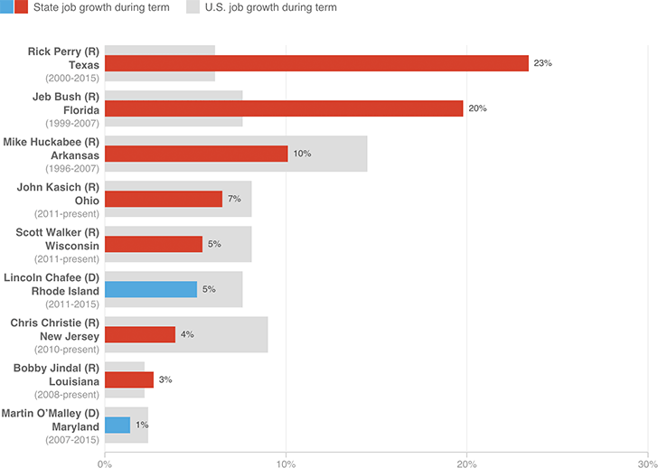

State Job Growth Vs. National Growth
Many current and former governers have expressed presidential ambitions for 2016. Here’s how employment has grown in their states during their terms, compared to U.S. job growth during the same period.

Notes
All figures used were seasonally adjusted.